Xfriend
- 底栏保持「对话 / 工作台 / 资源 / 我的」四项，信息架构不变。
- 对话、工作台、资源、我的及既有详情（模型/任务/电脑会话/连接/同步/迁移/市场/蓝图/设计专家）统一改用 Xf 组件。
- 新增「我的 → 外观」：跟随系统 / 浅色 / 深色 × 5 色板，本机保存。
前端重塑概念稿落地：暖纸画布、单一主色 5 色板、亮/暗主题、统一线性图标与 Xf 组件层
0.11.0 · versionCode 11 BUILD SUCCESSFUL · 模拟器 QA 回归通过本报告记录 0.11 视觉重塑的实现范围、证据与限制；不把构建成功等同于业务链路、真机视觉或无障碍验收通过。
本次按「Singu Xfriend 前端重塑概念稿 v1」（本地：D:\octop\docs\design\redesign-concept.html）重做两个 App 的视觉与组件层。改动集中在 UI / 主题文件（约 32 个）；未改业务 ViewModel、Android 运行时、网络协议、账号与同步逻辑。
暖纸画布、白色内容卡、细边框、单一主色；亮/暗主题跟随系统或手动固定；统一 60 个线性图标与 28 个共享组件；底栏保留 Haze 毛玻璃与选中主色胶囊；主要触控区不小于 48dp。
| 项目 | 落地内容 |
|---|---|
| 令牌 | 亮/暗两套语义色：canvas #F6F5F1/#0E0F12、surface #FFFFFF/#181A1F、ink #1B1C1F/#F1F2F4、line #E5E2DA/#282A31；XfType / XfDimens / XfShapes / XfElevation 统一尺寸与字号。 |
| 主色 5 组 | 靛蓝 #4F5DF0、青绿 #0E9384、琥珀 #B26B00、玫瑰 #D94F6B、紫罗兰 #7055DE；XFriend 默认靛蓝，XSalers 默认紫罗兰。 |
| 主题模式 | 跟随系统 / 浅色 / 深色；SharedPreferences xf_appearance 本机持久化，不进入账号同步；切换立即生效。 |
| 图标 | 60 个手工 ImageVector：24 视窗、1.75 stroke、round cap/join；导航 20dp、行内 17dp、强调 24dp。 |
| 组件 | 28 个：XfCard / XfButton / XfStatusChip / XfListRow / XfTextField / XfSegmented / XfDialog / XfEmptyState / XfBanner / XfTopBar 等；32 处确认/编辑弹窗统一 XfDialog。 |
| 壳层 | XfTopBar 56dp；底栏内容 80dp + 1dp 顶线 + Haze 毛玻璃 + 选中胶囊 + 系统 insets。 |
与概念稿的差异：桌面侧栏、三栏聊天、上下文/成员栏、创建预览栏不迁移；群聊/会议/决策档案不实现（无业务）；概念 4 套 accent 落地为 5 套（增加 XSalers 品牌紫）；XFriend 默认主色从旧品牌蓝 #5267E8 改为概念靛蓝（启动图标资产保留）。
| App / 范围 | 页面 | 说明 |
|---|---|---|
| Xfriend | 对话、工作台、资源、我的、外观 | 4 底栏不变；主要页面与详情迁移 Xf 组件 |
| Xfriend 详情/弹窗 | 模型配置、平台设备、任务中心、电脑会话、电脑与平台、账号与同步、迁移、市场、蓝图、设计专家、资源 | 既有路由全部保留；32 处弹窗统一 |
| Xsalers | 今日、客户、复盘、专家、我的、外观 | 5 底栏不变；主要页面迁移 Xf 组件 |
| Xsalers 详情/弹窗 | 客户档案、CRM 概览、记录详情、任务中心、专家设计/编辑、市场、模型配置、云同步、迁移、截图导入、导入导出 | 既有流程与确认语义保留 |
| 项目 | 结果 |
|---|---|
| 命令 | gradlew --no-daemon --max-workers=4 -Pkotlin.compiler.execution.strategy=in-process :app:assembleXfriendDebug :app:assembleXsalersDebug --console=plain |
| 日志 | build-0.11-final.log（最终，UTF-16，含 QA 修复）；build-0.11-b.log（首轮成功）；build-0.11-a.log（首次失败尝试） |
| 结果 | BUILD SUCCESSFUL in 9m 46s；77 actionable tasks（15 executed / 62 up-to-date）；0 个 e: 错误；仅历史 warning |
| 版本校验 | aapt2：versionCode 11 / versionName 0.11.0；包名 com.singu.xfriend.mobile / com.singu.xsalers.mobile；minSdk 26 / targetSdk 34 |
| XFriend APK | D:\build_apk\XFriend-Android-0.11.0-debug.apk · 26,451,921 bytes · SHA-256 46693C8F2A57BBC1161F43318533235B470234B67B31F38FF2DD97EC2845457E · mtime 2026-10-18 00:18:19 |
| XSalers APK | D:\build_apk\XSalers-Android-0.11.0-debug.apk · 26,451,941 bytes · SHA-256 E4C4A9A7C36124F0E55E64B725272476BB2291114CCA230A3F3D2BED323CA0C6 · mtime 2026-10-18 00:17:24 |
| 副本 | D:\xfriend-suite\.artifacts\0.11-release\（已同步覆盖） |
| 等级 | 问题 | 状态 |
|---|---|---|
| P0 | XSalers 主壳底部 5-tab 导航栏完全未渲染（WindowInsets.isImeVisible 误报导致底栏被跳过） | 已修复并通过回归：5 tab 全部出现且可切换（report.md §11） |
| P1 | XfSegmented 选中项阴影在浅色下呈较重灰色描边 | 已修复并通过回归：1dp line 细边框、无灰晕（report.md §11） |
| P2 | 底栏 64dp 偏低、文字距手势区偏近 | 已修复并通过回归：实测 80dp（210px @2.625，report.md §11） |
| 非问题 | XSalers 客户详情“点不开”为截图脚本误触；QA fixture 顶部提示条为 QA 构建专有 | 已复核，不计缺陷 |
| 未覆盖 | XSalers 专家/我的/外观页首轮因 P0 无法进入；复盘/客户档案深色未截 | 已在最终回归补截专家/我的/外观；深色页仍未覆盖 |
完整报告：docs/qa-0.11/report.md；最终回归结论见 §11「最终构建回归（结论：通过）」。QA fixture 为独立 .qa 包名，仅用于截图验收，不属于交付安装包。
回归使用修复后 QA fixture：build-0.11-qa-final.log（BUILD SUCCESSFUL in 10m 17s）→ .artifacts\0.11-qa\Xfriend-0.11-qa.apk（26,468,093 bytes / SHA-256 C6EAB964…FBB44）、Xsalers-0.11-qa.apk（26,468,205 bytes / SHA-256 0B53FF5F…41DBF8）。回归结果：XSalers 底栏 5 tab 全部可切换（含我的→外观浅/深）、分段控件 1dp 细边框无灰晕、XFriend 底栏实测 80dp（210px@2.625）、logcat 0 FATAL/ANR、无新问题；回归截图 xs-today-reg.png、xs-customers-reg.png、xs-review-reg.png、xs-experts-reg.png、xs-profile-reg.png、xs-appearance-reg-light/dark.png、xf-chat-reg.png、xf-workbench-reg.png。
单元测试已通过：test-0.11.log，两个 flavor 合计 574 项、0 failures / 0 errors；lint 未执行；真机、字体缩放、TalkBack、对比度、Haze 跨 API 未验证。
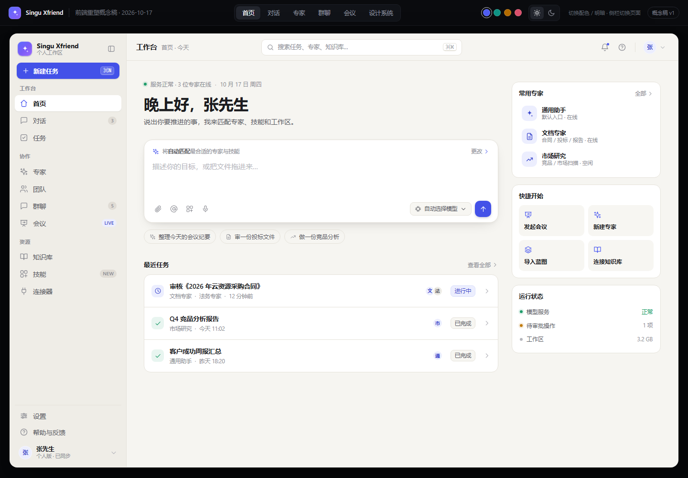
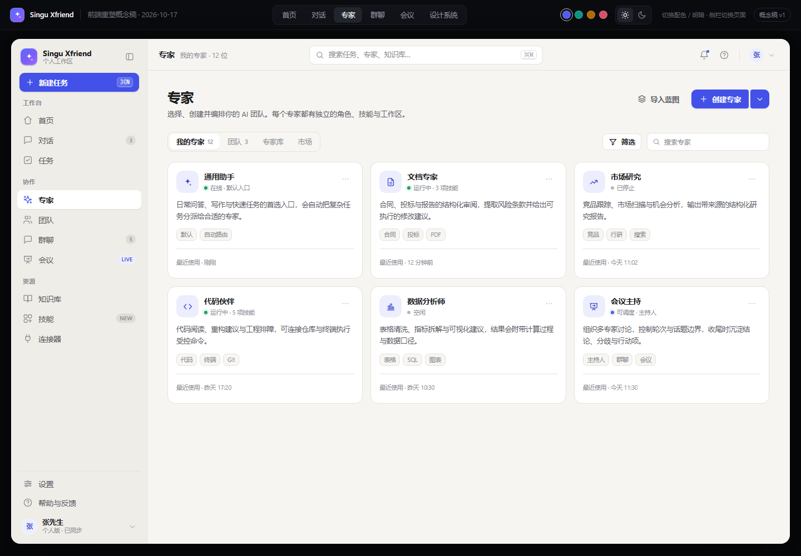
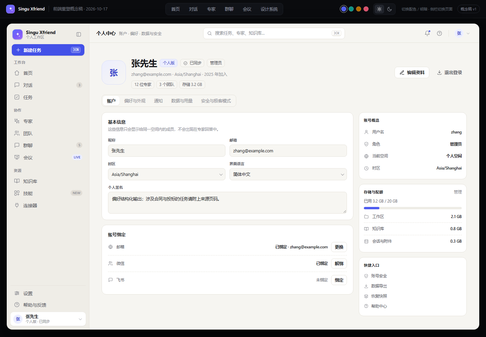
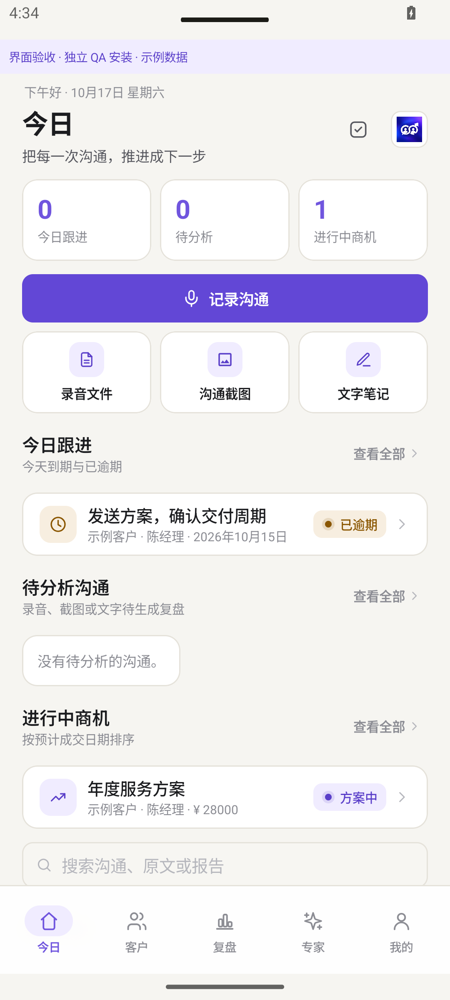
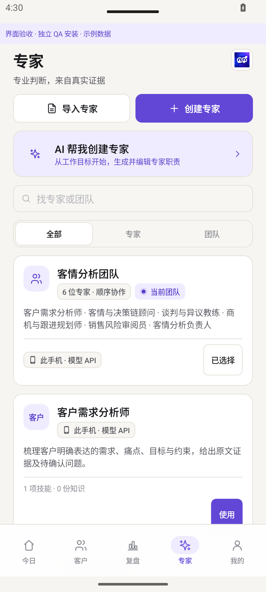
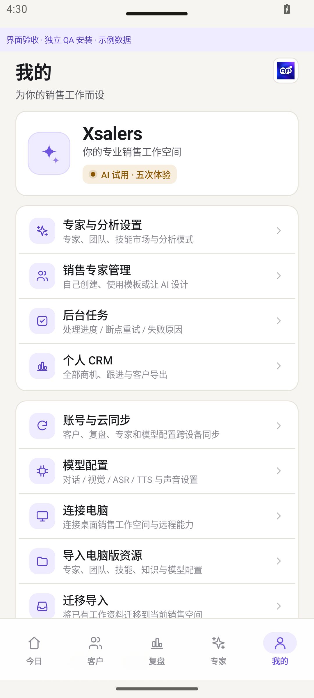
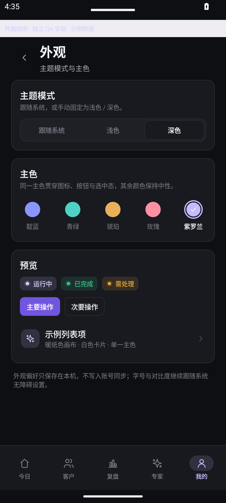
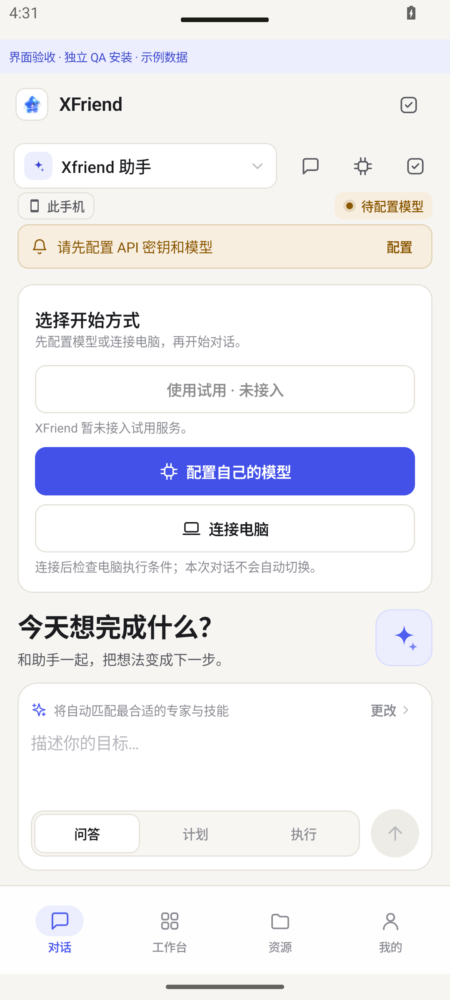
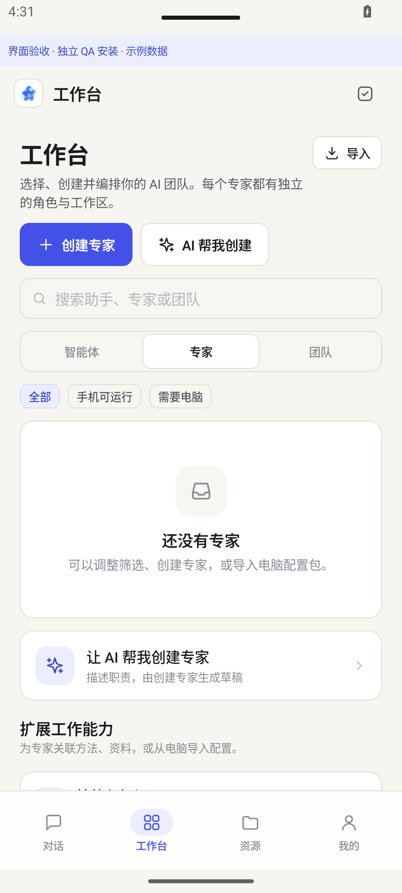
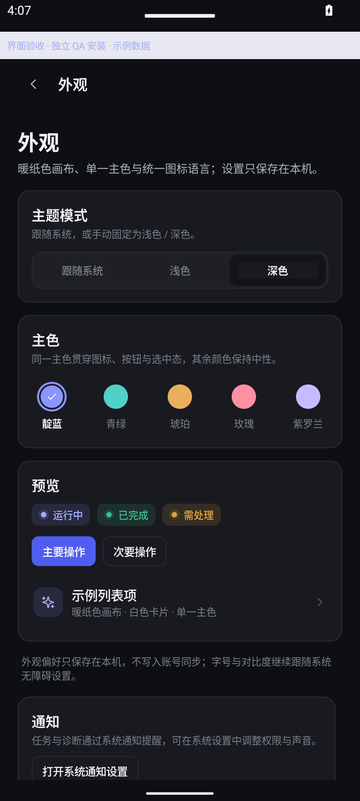
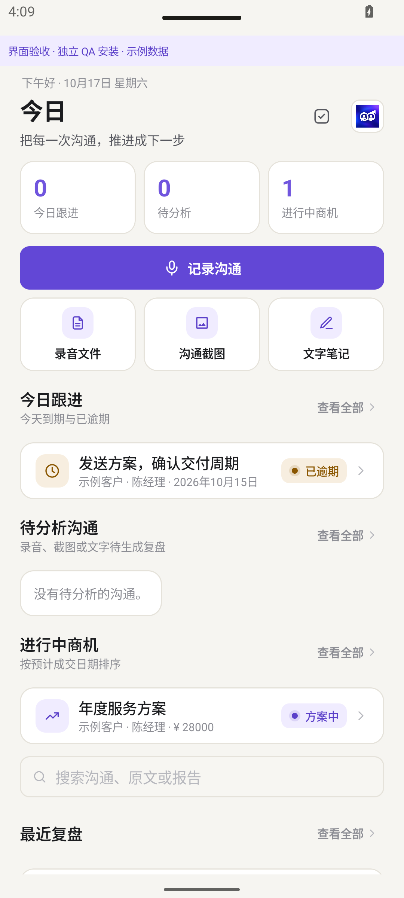
截图均来自 adb screencap，仅代表模拟器环境（API 35 / 1080×2400 / 420dpi），不是真机验收。